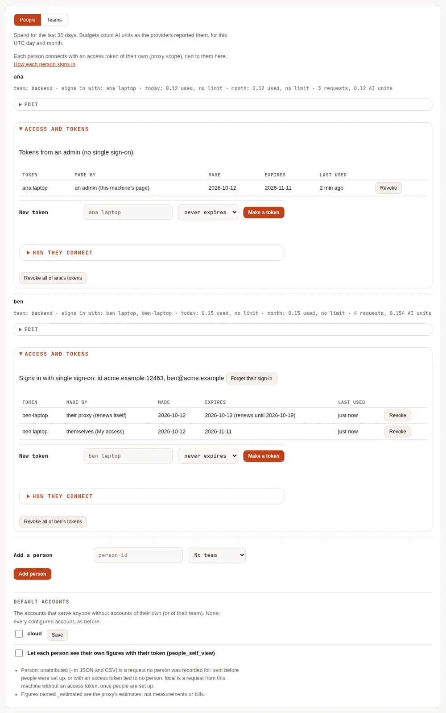
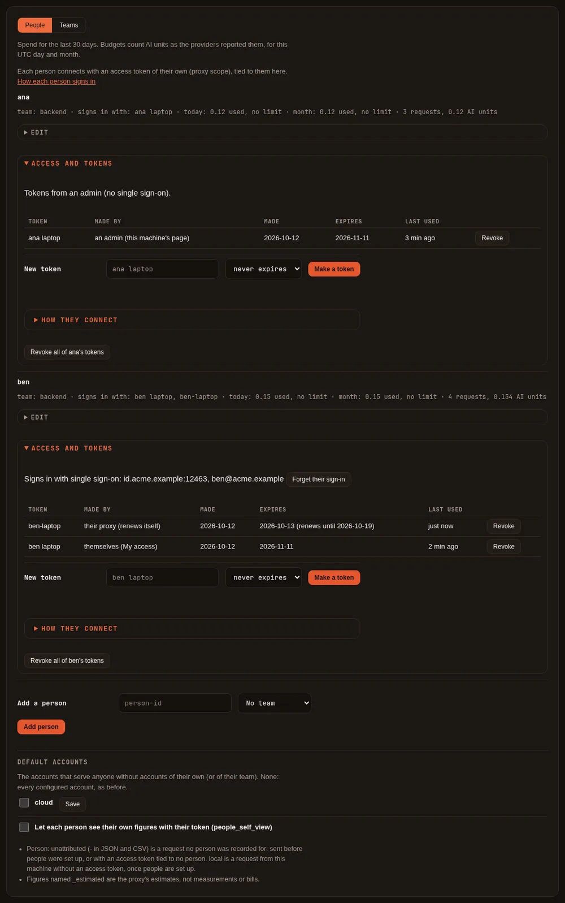
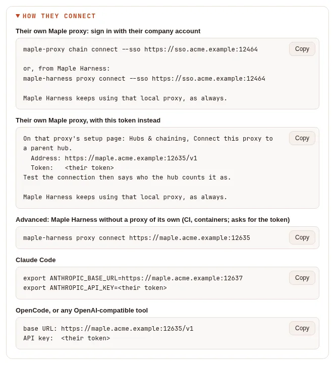
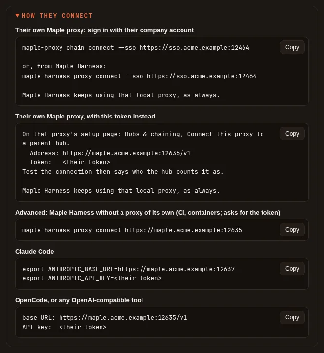
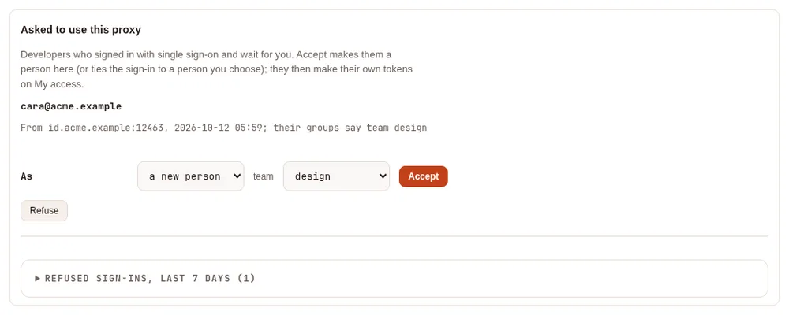
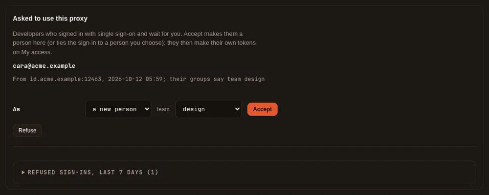

How developers sign in #
On this page
A developer on a shared proxy needs a token and a few lines that point their tools at the proxy. There are two ways to get them: a token from an admin (works everywhere, no extra setup), or signing in with the company account through the proxy's single sign-on address (the developer makes their own tokens). Both can run side by side.
Contents
- In plain words
- A token from an admin
- Signing in with your company account
- Sign your own proxy in
- Advanced: a token for CI and containers
- What admins see
- Expiry, renewal and revoking
- Limits
In plain words #
- Your admin can give you a token. They make it on the setup page's People & teams tab, copy it to you once, with the lines to paste into your tools. Nothing else to set up. With Maple on your laptop, you paste it on your own proxy's Hubs & chaining tab: your proxy joins the hub as you, and Maple Harness keeps using your proxy as always.
- Or you sign in yourself. If your admin turned on developer sign-in, open the address they give you (such as
https://maple-admin.example.com), sign in with your work account, and you land on My access: your own page, where you make tokens, see your usage, and copy the lines for your tools. - Your own Maple proxy signs in for you. On your laptop, Maple Harness talks to its own proxy, and that proxy signs in to the team hub with your company account: on its setup page (Hubs & chaining, Sign in with your company account), or in a terminal. It shows a link and a code, you type the code on My access, and your proxy is connected. It keeps itself signed in for a week, then asks you to sign in again.
- With Maple Harness, one command:
maple-harness proxy connect --sso https://maple-admin.example.comhas your local proxy sign in. The harness keeps using your local proxy, which now reaches the hub's models. - Tokens you make yourself expire (after 30 days by default). Tokens from an admin do not, unless they chose a date.
A token from an admin #
On the setup page, People & teams, open the person's Access and tokens:
- Make a token: what it is for (their laptop, CI), and when it expires (never, by default, or 7, 30 or 90 days,
or a year). It has the
proxyscope only and is tied to the person at once, so their budget, models and accounts apply from the first request. It is shown once, with Copy, together with the lines below. - How they connect: the same lines again later, without the token.
- The list of their tokens: what each is for, who made it (an admin, the developer themselves, or their proxy (renews itself) for a proxy they signed in), when, when it expires and when it was last used, with Revoke, and Revoke all of the person's tokens.


The lines they paste (the proxy's address comes from its host names, or from the single sign-on settings). The first one is the normal way: the developer's own Maple proxy, on their laptop, joins this one with the token, and Maple Harness keeps using that local proxy as always.
# Their own Maple proxy: paste this token on its Hubs & chaining tab
On that proxy's setup page: Hubs & chaining, Connect this proxy to a parent hub.
Address: https://maple.example.com:11535/v1
Token: <their token>
Test the connection then says who the hub counts it as.
Maple Harness keeps using that local proxy, as always.
# Advanced: Maple Harness without a proxy of its own (CI, containers; asks for the token)
maple-harness proxy connect https://maple.example.com:11535
# Claude Code
export ANTHROPIC_BASE_URL=https://maple.example.com:11537
export ANTHROPIC_API_KEY=<their token>
# OpenCode, or any OpenAI-compatible tool
# base URL: https://maple.example.com:11535/v1
# API key: <their token>

With developer sign-in on, the lines start with signing in instead: maple-proxy chain connect --sso <address> (or
maple-harness proxy connect --sso <address>), which has the developer's own proxy sign in with their company account
(Sign your own proxy in); pasting the token on their proxy comes second, then the advanced
line.


The token line for Maple Harness alone is the advanced way, for places
where no proxy of their own can run. On their own proxy, Test the connection recognises the token as theirs
("Connected as <person> at <hub>: your requests count as you"), leaves Use the hub's people and teams here, and
send usage up unticked and greyed out (that needs a chain token from the hub's admin), and Save keeps it: see
Join with a personal token and
Which setup do I need?.
The same works from a terminal on the proxy's machine: maple-proxy token add <label> --person <id>. Through single
sign-on, an admin can make tokens too (the proxy scope only, and they always expire: 90 days unless the admin
chooses).
Signing in with your company account #
When your admin turns on developer sign-in (Single sign-on, Developer sign-in), open the single sign-on address and sign in. Depending on how it is set up:
- Automatic: you are added as a person at your first sign-in (your team comes from your groups), and land on My access.
- Ask an admin: your first sign-in says Request sent. Once an admin accepts it on People & teams, sign in again.
My access is a page of its own: you never see the admin pages, and nothing there can change anyone else's access.


- Connect your tools: the lines to copy. The first, Your own Maple proxy (signs in through this page), are the commands that sign your proxy in (below); then a token for Maple Harness the advanced way, for Claude Code, and for any OpenAI-compatible tool.
- Connect your proxy: where you type the code your proxy shows when it signs in (below).
- Make a token: name it (your laptop, CI). It expires after the number of days your admin set (30 by default),
has the
proxyscope only, and is shown once. - Rotate: a new secret for the same token and a fresh expiry; the old secret stops at once.
- Revoke: it stops at once.
- Your usage: your own requests, tokens and AI units for the last 30 days.
Your account is matched by your identity at your company's provider, recorded at your first sign-in, never by your email address alone: an address that belongs to someone who signs in with another account does not take over their access.
Sign your own proxy in #
On your own machine, Maple Harness talks to its own proxy, and your other tools can too. To use the team hub, that proxy signs in to the hub with your company account, and the hub gives it a token for you. There are three ways to start it, and they are the same sign-in: one started in one place shows in the others, and any of them can end it.
| Where | How |
|---|---|
| Your proxy's setup page | Hubs & chaining, Connect this proxy to a parent hub, Sign in with your company account: type the hub's sign-in address (this single sign-on address) and Sign in with your company account |
| A terminal on your proxy's machine | maple-proxy chain connect --sso https://maple-admin.example.com |
| Maple Harness | maple-harness proxy connect --sso https://maple-admin.example.com: a shortcut that starts your local proxy if needed and has it sign in; the harness itself is not signed in and gets no token |
Each shows a link to My access and a short code. Open the link in a browser on any device (a phone works, so does a laptop next to a server you reached over SSH), sign in, and type the code under Connect your proxy, then Check the code. The page says which proxy asked, by its name, from which address and how long ago, and asks Is this your own proxy? Everything it sends here counts as you. Press Yes, connect it only if it is the proxy you just used: whoever started the sign-in gets access as you. No, refuse it tells that proxy no.


From Maple Harness it looks like this (the addresses, code and dates are examples):
$ maple-harness proxy connect --sso https://sso.acme.example:12464
Your local proxy is signing in to sso.acme.example:12464. Open this address in a browser (on any device), sign in with your company account, and enter the code:
https://sso.acme.example:12464/sso/access
88HB-6KCR
The hub's page names your proxy, so check the name it shows. The code works until 14:32. Waiting…
Your local proxy is now signed in to sso.acme.example:12464 as ben@acme.example; the harness keeps using your local proxy.
The hub's models are reached as hub/<model> (pick one with /model), counted at the hub as you. The proxy renews the sign-in by itself until Mon 19 Oct 14:22.What you get:
- Your proxy holds a token for you, with the
proxyscope only, in its secret store. It adds this hub as a provider (namedhubunless you choose another name), so its models work ashub/<model>in every tool that uses your proxy. - Everything your proxy sends counts as you: your budget, your models and your accounts here.
- The token lasts 12 hours and your proxy renews it quietly, for up to 7 days after you approved it. Then it asks you to sign in again, on its setup page (Sign in again) or with the same command.
- On My access the token is listed as your proxy (renews itself); revoke it there to cut that proxy off at once.
To end it from the proxy, use Disconnect on its setup page or
maple-proxy chain disconnect: the token is revoked at the hub as well. - A hub or a proxy before 2.2 cannot do this, and a hub with developer sign-in off refuses it: your proxy says so, and you use a token from your admin instead.
- No company-provider token is kept anywhere: the hub is what renews your proxy's access, and it stops renewing when an admin revokes your token, forgets your sign-in, removes you, takes you out of the developers' domains or groups, or turns developer sign-in off.
The full steps, with screenshots of your proxy's side, what it shows when the sign-in needs attention, and when to use a chain token instead: Join your laptop to a team hub.
Behind a company HTTP proxy, set HTTPS_PROXY as usual (and NO_PROXY for internal hubs) where your proxy runs:
its sign-in and renewals go through it, encrypted end to end with the hub.
Advanced: a token for CI and containers #
Where no proxy of your own can run (a CI job, a container), Maple Harness can use this proxy directly with a token, from an admin or made on My access:
maple-harness proxy connect https://maple.example.com:11535It asks for the token without showing it (or reads it from standard input), keeps it in the secret store and writes
harness.proxy in its config.yaml. maple-harness proxy status says where the proxy is, and maple-harness proxy
disconnect goes back to the proxy on that machine. Such a token does not renew itself. See
Connect the harness to a proxy.
What admins see #
On People & teams, each person's Access and tokens says how they sign in (tokens from an admin, or single sign-on with their provider and email) and lists their tokens as above, with Forget their sign-in (their next sign-in is matched again; their tokens work until they expire, and their proxies' sign-ins stop renewing).
An id given to someone else. A sign-in belongs to the person it was made for, not just to their id: each person
has a sign_in_marker in config.yaml, written by the proxy (leave it as it is). Remove a person and add someone
else with the same id, on the setup page, with maple-proxy people, or by editing config.yaml while the proxy is
stopped, and the old person's accounts do not sign in as the new one; what was made for the old person is cleared
(Recent activity shows sso.prune) and the tokens they made for themselves are revoked. With settings from files
(a ConfigMap) the proxy cannot write the marker: keep the sign_in_marker lines when you edit the files, and when an
id changes hands, change its marker or use Forget their sign-in (or maple-proxy people forget-signin <id>)
(Kubernetes).
Above the people, when something needs a look:
- Asked to use this proxy: developer sign-ins waiting for you (ask-an-admin mode), with Accept (as a new person, or as someone already there, with a team) and Refuse. A sign-in whose email belongs to someone who signs in with another account is marked email in use: accept it only for the right person.
- People who cannot connect yet: people with no live token, tokens never used, and tokens that expire within a week.
- Refused sign-ins of the last seven days, and why.


Expiry, renewal and revoking #
| Token | Expires | Renewed |
|---|---|---|
| Made by an admin | Never, unless they chose a date (through single sign-on: 90 days unless chosen) | No |
| Made on My access | After developers.token_days (30 by default, at most 90) | Rotate gives a fresh one |
| Your proxy's, signed in with your company account | 12 hours | Quietly, for up to 7 days after the approval |
A revoked or expired token stops at once on every replica of a shared proxy. Proxies chained below a hub stop
accepting it when they next fetch the hub's list: within seconds while the hub can be reached (they wait on the hub
for news), about a minute (chain.directory_interval) after a failed fetch, and while the hub cannot be reached at
all, up to chain.directory_grace (15 minutes by default), after which they refuse every token from the hub until
it answers again. The same goes for the old secret of a renewed proxy token. Revoking never comes undone by a renewal.
Removing a person revokes the tokens they made for themselves (on My access, and their proxies'); the tokens an admin made for them keep working, unattributed, unless you revoke them too (the remove confirm offers it).
Limits #
- A developer may hold 5 live tokens (
developers.max_tokens) and make 10 an hour. - Automatic onboarding adds at most 50 people a day; more sign-ins wait for an admin.
- With settings from a ConfigMap, developers cannot be added or make tokens themselves (My access says so): an admin gives them one.
- A proxy with replicas, with settings from a ConfigMap, or with read-only mounted secrets cannot keep a sign-in: connect it with a chain token from the hub's admin (Chain proxies into hubs).
- Tested against a stand-in identity provider, in Chromium through a TLS front, with a real local proxy signing in from its page and from the terminal. Not yet run against real Google, Microsoft Entra ID, Okta or GitHub accounts.